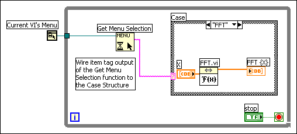

You can configure VIs and subVIs to work according to your application needs. For example, if you plan to use a VI as a subVI that requires user input, configure the VI so that its front panel appears each time you call it.
You can configure a VI in many ways, either within the VI itself or programmatically by using the VI Server.
Select File�VI Properties to configure the appearance and behavior of a VI. Use the Category pull-down menu at the top of the VI Properties dialog box to select from several different option categories.
You can create custom menus for every VI you build, and you can configure VIs to show or hide menu bars. Show and hide menu bars by selecting File�VI Properties, selecting Windows Appearance from the Category pull-down menu, clicking the Customize button, and placing or removing a checkmark from the Show Menu Bar checkbox.
Configuring menus includes creating the menu and providing the block diagram code that executes when the user selects the various menu items.
|
Note�� Custom menus appear only while the VI runs. |
You can build custom menus or modify the default LabVIEW menus statically when you edit the VI or programmatically when you run the VI.
To add a custom menu bar to a VI rather than the default menu bar, select Edit�Run-Time Menu and create a menu in the Menu Editor dialog box. LabVIEW creates a run-time menu (.rtm) file. After you create and save the .rtm file, you must maintain the same relative path between the VI and the .rtm file. You also can create a custom run-time shortcut menu by right-clicking a control and selecting Advanced�Run-Time Shortcut Menu�Edit. This option opens the Shortcut Menu Editor.
You can use the Menu Editor and Shortcut Menu Editor dialog boxes to build custom menus either with application items, which are menu items LabVIEW provides in the default menu, or with user items, which are menu items you add. LabVIEW defines the behavior of application items, but you control the behavior of user items with the block diagram. You also can use the Menu Editor and Shortcut Menu Editor dialog boxes to associate a custom .rtm file with a VI or control. When the VI runs, it loads the menu from the .rtm file.
Use the Menu Editor and Shortcut Menu Editor dialog boxes to customize menus when editing a VI. Use the Menu functions to customize menus programmatically at run time. The functions allow you to insert, delete, and modify the attributes of user items. You can only add or delete application items because LabVIEW defines the behavior and state of application items.
When a VI is running, or is in run mode, all front panel objects have an abridged set of shortcut menu items by default. Use the abridged shortcut menu items to cut, copy, or paste the contents of the object, to set the object to its default value, or to read the description of the object.
|
Note��You cannot reinitialize, cut, or paste the data of an indicator in run mode. The Reinitialize to Default Value, Cut Data, and Paste Data options are available only for controls in run mode. |
Some of the more complex controls have additional options. For example, the knob shortcut menu includes items to add a needle and to change the display of scale markers.
You can customize the run-time shortcut menu for each control you include in a VI. To customize a shortcut menu, right-click a control and select Advanced�Run-Time Shortcut Menu�Edit from the shortcut menu to display the Shortcut Menu Editor dialog box. Use the Shortcut Menu Editor dialog box to associate the default shortcut menu or a customized shortcut menu file (.rtm) with the control. You can customize shortcut menus programmatically.
You also can add shortcut menus to front panels. To add a shortcut menu to the front panel, use the Shortcut Menu Activation and Shortcut Menu Selection pane events.
You also can disable the run-time shortcut menu on a control.
|
Note��Custom run-time shortcut menus appear only while the VI runs. |
You also can use the Mouse Down? and Shortcut Menu Activation? filter events to display a shortcut menu when you left-click a control. To perform this action, modify the data returned by the Button event data field of the Mouse Down? filter event. The value of the left mouse button is 1, and the value of the right mouse button is 2. In order to display the shortcut menu when you left-click a control, change the Button event data field to 2 so that LabVIEW treats a left-click like a right-click.
When you create a custom menu, you assign each menu item a unique, case-insensitive string identifier called a tag. When the user selects a menu item, you retrieve its tag programmatically using the Get Menu Selection function. LabVIEW provides a handler on the block diagram for each menu item based on the tag value of each menu item. The handler is a While Loop and Case structure combination that allows you to determine which, if any, menu is selected and to execute the appropriate code.
After you build a custom menu, build a Case structure on the block diagram that executes, or handles, each item in the custom menu. This process is called menu selection handling. LabVIEW handles all application items implicitly.
In the following block diagram, the Get Menu Selection function reads the menu item the user selects and passes the menu item into the Case structure, where the menu item executes.

If you know that a certain menu item takes a long time to process, wire a Boolean control to the block menu input of the Get Menu Selection function and set the Boolean control to TRUE to disable the menu bar so the user cannot select anything else on the menu while LabVIEW processes the menu item. Wire a TRUE value to the Enable Menu Tracking function to enable the menu bar after LabVIEW processes the menu item.
You also can use the Event structure to handle menu events.